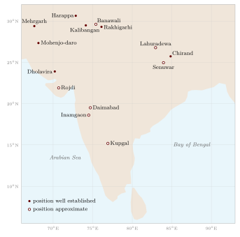

Chapter 2: From Mehrgarh to the Early Historic Period: Agriculture in Early India¶
Farming in South Asia is some nine thousand years old. For more than five thousand of those years our only evidence is archaeological: seeds, bones, buildings and tools. Texts begin with the Ṛgveda in the second millennium BCE, and for many centuries afterwards they speak of agriculture only in passing, in hymns, ritual manuals, philosophical dialogues, legal rules and poetry. This chapter follows both kinds of evidence from the first farming villages to the early centuries CE, when land grants, the Arthaśāstra and the Tamil anthologies give a fuller picture. The later agrarian history of the subcontinent is taken up in Chapter 18.
2.1 The Evidence of Archaeology¶
Two specialised fields supply most of what we know about early farming. Archaeobotany studies plant remains recovered from excavations: seeds and grains preserved by charring, impressions of grain and chaff in pottery and mud-brick, and microscopic remains such as phytoliths and starch grains. Since the 1970s the systematic recovery of charred remains by flotation (washing soil samples in water so that light plant material floats free) has greatly increased the quantity and reliability of the data. Zooarchaeology studies animal bones, identifying species, estimating the age and sex of slaughtered animals, and measuring changes in size and shape that may indicate domestication.
Both fields depend on careful identification and on secure dating, usually by radiocarbon. Many older reports, including some still widely quoted, rest on identifications that have since been questioned or on dates obtained from material not directly associated with the plants concerned. The syntheses by Dorian Fuller (Fuller 2006, 2011) sift this evidence critically, and this chapter relies on them for the overall picture. For the Indus civilisation the standard accounts are those of Allchin and Allchin (1982), Kenoyer (1998) and Possehl (2002).
2.2 Mehrgarh and the First Farmers of the North-West¶
Mehrgarh lies on the Kachi plain at the foot of the Bolan Pass in Balochistan, Pakistan, where the hills of the Iranian plateau meet the Indus plain. Excavated by a French mission under Jean-François Jarrige from 1974, it is the best-documented early farming site in South Asia. Its earliest levels, without pottery, begin around 7000 BCE (Allchin and Allchin 1982; Possehl 2002).
The people of early Mehrgarh lived in houses of mud brick, some of them divided into small compartments that the excavators interpreted as storerooms. Their plant remains are dominated by barley, with smaller amounts of wheat. Whether these crops were brought from south-west Asia, where wheat and barley were first domesticated, or whether barley at least was domesticated locally from the wild barley that grows in the region, is still debated; current opinion favours the introduction of most of the cereal crops from the west, adapted to local conditions (Fuller 2006).
The animal bones tell a clearer story. Richard Meadow’s analysis showed that in the earliest levels hunted animals — gazelle, deer, wild cattle, wild sheep and goats, wild pig, the onager — are well represented alongside goats, which may already have been domestic. Over the following millennia the proportion of cattle, sheep and goats rises until they dominate the assemblage, and the cattle, sheep and goats all become smaller in size, a change Meadow interpreted as evidence for local domestication (Meadow 1996). In the case of cattle, the animals concerned are the humped zebu (Bos indicus), which was domesticated in this region independently of the humpless taurine cattle of south-west Asia. Zebu cattle were to become the foundation of South Asian agriculture, as draught animals, as sources of milk and dung, and as a measure of wealth (Chapter 13).
Mehrgarh has also yielded some of the earliest evidence for cotton anywhere. Moulherat et al. (2002) identified mineralised cotton fibres preserved inside a copper bead from a burial dated to around the sixth to fifth millennium BCE. Whether the plant was cultivated or gathered from the wild cannot be determined from fibres alone, but the find shows that cotton was being processed into thread at a very early date. The later history of cotton textiles is treated in Volume 17.
2.3 Many Centres of Domestication¶
Older accounts, following the botanist N. I. Vavilov, treated India as one of a small number of “centres of origin” of cultivated plants (Vavilov 1951). Archaeobotany has replaced this with a more complex picture. Fuller has argued that the subcontinent contained several distinct regions in which local wild plants were independently taken into cultivation, in addition to receiving crops from south-west Asia, Africa and East Asia (Fuller 2006, 2011). Among the regions he identifies are:
-
the southern Deccan, where mung bean (Vigna radiata), horse gram (Macrotyloma uniflorum) and small millets such as browntop millet (Urochloa ramosa, syn. Brachiaria ramosa) and bristly foxtail (Setaria verticillata) were cultivated by Neolithic communities;
-
Gujarat and Saurashtra, where native small millets, probably including little millet (Panicum sumatrense), formed the basis of early farming;
-
the Ganga plain, where a form of rice was cultivated and eventually domesticated (Section 2.5);
-
the greater Indus region, which contributed sesame (Sesamum indicum), domesticated from a wild relative native to India, and probably the tree cotton Gossypium arboreum, as well as zebu cattle and, probably, the water buffalo.
The evidence is uneven and some identifications and dates remain disputed, but the general conclusion — that South Asian agriculture was built from several local beginnings combined with crops that arrived from outside — is now widely accepted. Table 2.1 summarises the main groups of early crops, and Figure 2.1 shows the sites named in this chapter.

| Crop group | Examples | Origin and earliest evidence |
|---|---|---|
| Winter cereals | Barley, wheat | South-west Asia (local barley debated); Mehrgarh, from c. 7000 BCE |
| Winter pulses and oilseeds | Lentil, pea, chickpea, grass pea, linseed | South-west Asia; widespread in Harappan sites |
| Native millets | Little millet, browntop millet, bristly foxtail | Gujarat and the southern Deccan; 3rd millennium BCE |
| Native pulses | Mung bean, black gram (urd), horse gram | Several Indian regions; 3rd–2nd millennium BCE |
| Oil and fibre crops | Sesame, tree cotton | Indus region; Harappan (cotton fibres earlier at Mehrgarh) |
| Rice | Oryza sativa | Ganga plain and East Asia; origins debated (Section 2.5) |
| African crops | Sorghum, pearl millet, finger millet, hyacinth bean, cowpea | Africa, via Arabia; from c. 2000 BCE |
2.4 Harappan Agriculture¶
The Indus or Harappan civilisation developed out of the farming cultures of the north-west. Its Early Harappan phase begins around 3300 BCE and its Mature, urban phase lasts from about 2600 to 1900 BCE. At its height it extended from Balochistan and the Indus valley to Gujarat, Haryana and western Uttar Pradesh, with cities such as Mohenjo-daro, Harappa, Ganweriwala, Rakhigarhi and Dholavira and hundreds of smaller settlements (Kenoyer 1998; Possehl 2002). The cities depended on the surplus of a large farming and herding population.
2.4.1 Crops and seasons¶
The Harappan crop repertoire combined winter crops of south-west Asian origin — wheat, barley, lentil, pea, chickpea, grass pea and linseed — with summer crops sown with the monsoon: small millets, native pulses such as mung and urd, sesame, cotton and, in some areas, rice. Fruits such as the jujube (ber) were collected or grown. The combination of a winter and a summer crop season, which remains characteristic of much of South Asian agriculture, is thus visible in the Harappan period, though its importance varied from region to region.
Steven Weber’s study of the plant remains from Rojdi in Saurashtra showed an agriculture based mainly on summer-grown small millets rather than on wheat and barley, and a crop mix that changed over the life of the settlement (Weber 1991). In a later synthesis he argued that Harappan farming was regionally diverse: winter cereals predominated in the Punjab and the Indus valley, summer millets in Gujarat, and the combination of the two seasons allowed some communities to spread risk and to increase production (Weber 1999). There was no single “Harappan agriculture”, but a set of regional systems adapted to differences in rainfall, river regime and soil.
2.4.2 Fields, ploughs and water¶
At Kalibangan in northern Rajasthan, excavators found beneath later deposits a field surface of the Early Harappan period (first half of the third millennium BCE) bearing criss-cross plough furrows. The furrows ran in two directions, closely spaced one way and widely spaced the other, and the excavator B. B. Lal compared this pattern with the local practice, still observed in the twentieth century, of sowing two different crops in the same field in rows at right angles (Allchin and Allchin 1982). It remains one of the earliest excavated ploughed fields anywhere. A terracotta model of a plough from Banawali in Haryana confirms the use of the ard, a simple plough that scratches rather than turns the soil. Bullock carts are known from numerous terracotta models, and zebu oxen were evidently the draught animals.
There is no clear evidence for large-scale canal irrigation in the Mature Harappan heartland. Agriculture seems to have relied on rainfall, on the annual floods of the Indus and its tributaries, which deposited moisture and silt on the fields for winter sowing, and on wells: Mohenjo-daro alone had a very large number of brick-lined wells. At Dholavira, in the arid Rann of Kachchh, large rock-cut reservoirs stored water for the city. The history of water management is followed in Chapter 8.
2.4.3 Storage¶
Large buildings at Mohenjo-daro and Harappa were identified by Mortimer Wheeler as state “granaries”. Later excavators have questioned this: no grain was found in them, and they may have been halls or warehouses of other kinds (Kenoyer 1998). Storage jars, bins and sealings show that goods, including grain, were stored and controlled, but the scale and organisation of grain storage remain uncertain.
2.4.4 Animals¶
Animal bones from Harappan sites are dominated by cattle, most of them zebu, followed by sheep and goats; water buffalo and pigs are also present, together with wild animals and large quantities of fish (Meadow 1996; Possehl 2002). The elephant, rhinoceros, tiger and buffalo appear on seals; their depiction does not imply domestication. No securely identified domestic horse has been found in a Mature Harappan context; horses and spoked-wheel chariots become prominent only with the Ṛgveda (Chapter 15).
Harappan craftspeople also used animal products in sophisticated ways. Analysis of fibres from Harappa and Chanhu-daro has shown that silk from wild silk moths was being used in the third millennium BCE (Good et al. 2009); silk and other insect products are discussed in Chapter 17.
2.4.5 African millets and the late Harappan period¶
From about 2000 BCE, crops of African origin — sorghum, pearl millet and finger millet among the cereals, hyacinth bean and cowpea among the pulses — appear in Gujarat, the Indus region and peninsular India, probably having crossed the Arabian Sea through contacts with Arabia and East Africa (Fuller 2006). Some early identifications, especially of finger millet, have been questioned, and the routes and dates are still being refined. These drought-tolerant summer crops became important in the late and post-urban phases of the Harappan tradition, when settlement shifted eastwards and southwards and, in several regions, summer cropping increased. Sorghum (jowar), pearl millet (bajra) and finger millet (ragi) were to become staples of the drier parts of India (Chapter 9).
2.5 Rice and the Ganga Plain¶
Rice has a complicated history in South Asia. Wild rices grow widely in the subcontinent, and their grains were gathered long before domestication. Rice remains reported from the middle Ganga plain, at sites such as Lahuradewa in Uttar Pradesh, have been dated by their excavators as early as the seventh millennium BCE. These claims are debated: the rice may have been wild or gathered from wild stands, and the association between the dated material and the rice is not always secure. More generally accepted evidence for domesticated rice in the Ganga plain, at sites such as Senuwar and Chirand in Bihar, belongs to the third and second millennia BCE (Fuller 2006, 2011).
One influential model, developed by Fuller, holds that people in the Ganga plain cultivated a local wild rice for a long period without its becoming fully domesticated, and that domesticated japonica rice, arriving from East Asia in the late third or early second millennium BCE, hybridised with it to produce the domesticated indica rices of South Asia (Fuller 2011). Other scholars favour a more independent domestication in India. Rice also appears at a number of Harappan sites, particularly in the eastern Harappan region, but how much of it was cultivated or domesticated is debated. Whatever the details, by the first millennium BCE rice was the principal crop of the middle and lower Ganga plain and of the eastern and southern river deltas, and it is the crop around which the Kṛṣi-Parāśara and the Kāśyapīya Kṛṣisūkti were later written (Chapter 3).
2.6 Neolithic South India and the Deccan¶
In the southern Deccan — northern Karnataka and western Andhra Pradesh — a Neolithic culture flourished from about 3000 BCE. Its most striking monuments are the ash-mounds found at sites such as Utnur, Kupgal and Budihal: great accumulations of burnt cattle dung, sometimes vitrified, which mark places where cattle were penned and the dung periodically burnt. F. R. Allchin interpreted them as the cattle stations of a pastoral society, and the large proportion of cattle bones at southern Neolithic sites confirms the central place of herding (Allchin and Allchin 1982). The burning of dung heaps may have had ritual as well as practical purposes; their exact function is still discussed.
These cattle-keepers were also cultivators. Archaeobotanical work at southern Neolithic sites has shown that their staples were native crops: the pulses mung bean and horse gram, and small millets such as browntop millet and bristly foxtail. Wheat and barley from the north and, later, African millets and pulses were added to this base (Fuller 2006). The pairing of millets and pulses on rain-fed land, with cattle supplying traction and dung, is a pattern that persisted in the peninsula for millennia.
Further north in the Deccan, Chalcolithic farming villages of the second millennium BCE, such as Inamgaon and Daimabad in Maharashtra, grew barley, wheat, lentils, other pulses and millets, and kept cattle, sheep, goats and pigs. At Inamgaon the excavators reported an embankment and channel that they interpreted as a work for diverting flood water to fields. Such villages show that farming had spread across most of the subcontinent long before the earliest written references to it.
2.7 Agriculture in the Vedic Texts¶
2.7.1 The Ṛgveda¶
The Ṛgveda (core c. 1500–1200 BCE) was composed in the north-west, in the land of the Indus and its tributaries, by communities for whom cattle were the chief form of wealth. Cows are prayed for, fought over and praised; a word for battle, gaviṣṭi, means literally “desire for cows”. But the hymns also know agriculture. They speak of the field (kṣetra) and the fertile field (urvarā), of grain (yava, usually understood as barley but sometimes grain in general), of the plough (lāṅgala, sīra), the ploughshare (phāla), the furrow (sītā), the ploughman (kīnāśa) and the sickle (sṛṇi), and of oxen yoked to the plough (Jamison and Brereton 2014).
The fullest agricultural hymn is Ṛgveda 4.57, addressed to the Lord of the Field (kṣetrasya pati), to the pair Śuna and Sīra, and to the Furrow (Sītā). It asks for the success of ploughing: that the ploughshares cut the earth auspiciously (śunam), that the ploughmen go with their draught animals, that the furrow be turned towards the worshippers and give them good fortune, and that Parjanya, the rain god, water it. The furrow personified as a goddess is the background to the later story, told in the Rāmāyaṇa, that Sītā was found by King Janaka in a furrow as he ploughed ground for a sacrifice. A late hymn (Ṛgveda 10.101) uses the images of yoking the ploughs, sowing seed in the prepared furrow and drawing water from a well to describe the work of the priests.
A well-known verse comes from an unexpected source, the lament of a ruined gambler:
Ṛgveda 10.34.13
akṣair mā dīvyaḥ kṛṣim it kṛṣasva
Do not play with dice: plough your field.
The verse goes on to bid the gambler take pleasure in the wealth that farming brings, for there are his cows and there his wife (Jamison and Brereton 2014). Agriculture here stands for a settled, respectable livelihood.
2.7.2 The Atharvaveda¶
The Atharvaveda contains many charms concerned with everyday life, including the success of ploughing (3.17 is a ploughing hymn), the growth of grain, protection against pests that damage crops, rain, and the health and increase of cattle (Whitney 1905). Its twelfth book opens with the long hymn to the Earth (Pṛthivīsūkta, 12.1), which praises the earth as the ground on which food and the ploughed fields came into being, on which plants and trees grow, and which supports all creatures. One verse asks that whatever is dug from her may quickly grow again, and that the digger may not wound her vital parts. The best-known line declares:
Atharvaveda 12.1.12
mātā bhūmiḥ putro ahaṃ pṛthivyāḥ
The Earth is my mother; I am the son of the Earth.
The same verse names Parjanya, the rain-cloud, as father. The hymn is a religious and poetic text, not an agricultural manual; but it shows that the dependence of human life on soil and rain was a theme of reflection at an early date. Modern readings of it as an environmental ethic are a later interpretation, and should be presented as such.
2.7.3 The later Vedic period¶
Between about 1200 and 500 BCE the centre of Vedic culture moved east into the Ganga–Yamuna doab and the middle Ganga plain, and agriculture became much more prominent in the texts. Rice (vrīhi) now appears alongside barley, together with wheat (godhūma), pulses, sesame, millets and sugarcane (ikṣu), while wild grains such as nīvāra (wild rice) retained a place in ritual. A passage of the Taittirīya Saṃhitā (5.1.7) observes that the crop ripens twice a year (Macdonell and Keith 1912), reflecting the two cropping seasons already seen in the archaeological record. The Bṛhadāraṇyaka Upaniṣad (6.3.13) lists ten “village” (grāmya) grains used in a ritual preparation — rice, barley, sesame, beans, two small millets, wheat, lentils and two pulses of uncertain identity — in contrast to the wild (āraṇya) plants, a distinction that runs through Vedic ritual classifications of both plants and animals; the verse is quoted in Chapter 9 (Olivelle 1998).
The Brāhmaṇas describe ritual ploughing as part of the construction of the great fire altar: the site is ploughed with a team of oxen and sown with seeds of many kinds. The Śatapatha Brāhmaṇa summarises agricultural work as ploughing, sowing, reaping and threshing. Some texts speak of ritual plough teams of six, eight, twelve or even twenty-four oxen; whether such large teams were ever used in ordinary farming is doubtful.
The spread of agriculture in the Ganga plain coincided with the spread of iron, which appears in northern India from around the end of the second millennium BCE. D. D. Kosambi argued that iron axes and ploughshares made possible the clearing of the plain’s forests and the expansion of plough agriculture that underlay the growth of states and cities in the mid-first millennium BCE (Kosambi 1956). Later scholars have qualified this view: iron tools are scarce in early levels, forests could be cleared with fire, and iron ploughshares become common only later. The relation between iron, agriculture and social change remains a subject of debate (Singh 2008).
2.8 Food in the Upaniṣads¶
The early Upaniṣads (c. 7th–5th century BCE) often use food (anna) as a philosophical theme. In the third section of the Taittirīya Upaniṣad, Bhṛgu, son of Varuṇa, asks his father to teach him brahman. Told to practise austerity and discover it himself, he first concludes:
Taittirīya Upaniṣad 3.2
annaṃ brahmeti vyajānāt
He perceived that brahman is food.
The text continues that from food beings are born, by food they live, and into food they pass at death. It is important to read this in context. Food is the first and lowest stage of Bhṛgu’s inquiry: he returns to his father and is sent back to practise austerity again, and successively identifies brahman with breath, mind, perception and finally bliss (ānanda) (Olivelle 1998). The passage is a teaching about levels of reality, not a doctrine about agriculture. Later in the same section, however, the text lays down as vows that one should not despise food, should not reject it, and should make food plentiful — injunctions that connect the philosophy of food with the duty of hospitality and the reality of scarcity.
That reality appears elsewhere. The Chāndogya Upaniṣad (1.10) opens a story with the country of the Kurus devastated — by hail or, as some translate, by locusts — and the learned Uṣasti Cākrāyaṇa reduced to begging leftover beans from an elephant-keeper. Crop failure and famine were familiar experiences.
2.9 Varṇa, Vārttā and Labour¶
The Brahmanical texts assign occupations to the four varṇas. Agriculture, cattle-keeping and trade together form vārttā, the livelihood proper to the vaiśya. The Bhagavad Gītā states the scheme concisely:
Bhagavad Gītā 18.44
kṛṣigorakṣyavāṇijyaṃ vaiśyakarma svabhāvajam |
paricaryātmakaṃ karma śūdrasyāpi svabhāvajam ||
Agriculture, cattle-herding and trade are the vaiśya’s work, born of his nature; work consisting of service is likewise the śūdra’s, born of his nature.
The Manusmṛti (1.90) likewise lists protecting animals, agriculture and trade among the vaiśya’s duties (Olivelle 2005). Yet the same text is ambivalent about ploughing. It advises a brahmin or kṣatriya forced to live by a vaiśya’s occupation to avoid agriculture, which involves violence and depends on others; some, it says, consider agriculture good, but it is condemned by the virtuous, because the wooden implement with its iron tip injures the earth and the creatures that live in it (Manusmṛti 10.83–84). This concern with the killing of small creatures in the soil was shared with Jain and Buddhist thought (Section 2.10), and it contributed to the low status of the actual work of ploughing.
The scheme of four varṇas was an ideal, not a description. In practice, the people who worked the land were often not vaiśyas. Pali texts speak of dāsa-kammakara, slaves and hired workers, labouring in the fields of wealthy householders (gahapati) (Chakravarti 1987). The Arthaśāstra has crown lands worked by slaves, hired labourers and people working off fines. R. S. Sharma showed how, over the first millennium CE, the śūdra came increasingly to be identified with the peasant cultivator; the Chinese pilgrim Xuanzang in the seventh century described the śūdras as agriculturists (Sharma 1980). Below them, groups regarded as untouchable were increasingly confined to the most degraded forms of labour. The history of caste, land and agricultural labour is treated more fully in Chapter 18, and that of hides and leather in Chapter 13.
2.10 Buddhist and Jain Perspectives¶
The Buddha (c. 480–400 BCE) taught in the agrarian kingdoms of the middle Ganga plain, and Pali texts are full of agricultural images. In the Kasibhāradvāja Sutta (Sutta Nipāta 1.4, vv. 76–82), the Buddha comes for alms to a brahmin farmer at sowing time, when five hundred ploughs are being yoked. The brahmin rebukes him: he himself ploughs and sows and then eats, and the Buddha too should plough and sow before he eats. The Buddha replies that he also ploughs and sows, and explains in a sustained metaphor: faith is his seed, austerity the rain, wisdom his yoke and plough, mindfulness his ploughshare and goad, and effort his draught ox; and his ploughing yields the deathless. The dialogue shows both the dignity of the landowning farmer and the challenge that the renouncer’s life posed to it.
Buddhist tradition also connects the Buddha’s first experience of meditation with agriculture. In the Majjhima Nikāya he recalls sitting in the shade of a rose-apple tree as a boy while his father was at work; later tradition places the scene at a royal ploughing festival. Royal ploughing ceremonies to open the agricultural season are still held in Thailand and Cambodia, and ritual ploughing by kings is mentioned in several Indian texts.
Buddhist monastic rules forbid monks to dig the ground or destroy plant life, and Jain ethics go further. Because Jain doctrine holds that earth, water and plants are themselves inhabited by living beings (Tatia 1994), ploughing and digging necessarily involve violence. Jain lay codes discouraged occupations involving much harm, and some lists of forbidden trades include digging and ploughing the earth. This is often cited as one reason why many Jain lay communities came to be concentrated in trade rather than agriculture, though economic and historical factors were also at work.
2.11 The Mauryan State and the Arthaśāstra¶
The Mauryan empire (c. 321–185 BCE) was the first state to rule most of the subcontinent. The Greek envoy Megasthenes, whose account survives only in quotations by later Greek writers, reported that India had two harvests a year, because rain fell in both summer and winter, and that farmers formed a large class who were left unmolested even when armies fought nearby. These reports are idealised and filtered through Greek expectations, but they confirm the double cropping already attested in Indian sources.
2.11.1 The Superintendent of Agriculture¶
The Arthaśāstra, traditionally attributed to Kauṭilya, minister of Candragupta Maurya, is in its present form a composite text compiled between about 50 BCE and 300 CE (Olivelle 2013). It cannot therefore be read as a direct description of Mauryan administration, but it reflects long experience of governing agrarian kingdoms. Its chapter on the Superintendent of Agriculture (sītādhyakṣa, 2.24) concerns the management of crown land (sītā). Because this chapter is drawn on in several later chapters of this volume, its contents are summarised here once. Its opening sentence (2.24.1) requires the superintendent to be conversant with the science of agriculture (kṛṣitantra) and the science of the life of plants (vṛkṣāyurveda), or to be assisted by those who are (Kangle 1965; Olivelle 2013). A third term in the same compound is transmitted in two forms: gulma, “shrubs”, in the text translated by Shamasastry (1915), and śulba, literally “cord”, in the text adopted by Kangle. Since the cord was the surveyor’s measuring line, śulba may refer to the measurement of land, though it has also been taken to mean knowledge of water; its sense here is uncertain, and this volume renders the qualification simply as agriculture and the science of plant life. The superintendent is to collect in good time the seeds of all grains, flowers, fruits, vegetables, bulbous roots, creepers, flax and cotton, and have them sown, on land ploughed many times, by serfs (dāsa), hired labourers and those working off fines. Work is not to be held up for want of ploughs and other implements, bullocks, or the smiths, carpenters, rope-makers, snake-catchers and other workers who serve the farm.
The rest of the chapter covers the matters taken up later in this volume. It states the normal annual rainfall of dry (jāṅgala) and wet (ānūpa) country and of named regions, measured in droṇas with a rain gauge kept at the royal storehouse, and links the expected rain to planetary signs (Section 3.5); the jāṅgala/ānūpa distinction is the same one found in the medical texts (Section 1.6). It classes crops by sowing time (Section 9.12), prescribes the treatment of seeds and cuttings before sowing (Section 9.14), and matches particular crops to particular ground, from river banks to the ridges between beds (Section 7.1). It ranks crops by their returns, placing rice and similar grains highest and sugarcane lowest because it is exposed to many dangers and costly to grow. And it fixes a water rate (udakabhāga) for those who irrigate from the king’s water-works, graded by the method by which the water reaches the field: by hand, carried on the shoulder, by a water-lifting device, or drawn from rivers, lakes, tanks and wells (Kangle 1965). How far such rules were ever applied is unknown. They show at least that the authors treated seed, the relative risks of crops and the cost of irrigation as matters of state concern.
Other superintendents described in the Arthaśāstra were responsible for cattle (go’dhyakṣa, 2.29), pastures, horses, elephants, forest produce, and the slaughter of animals and the protection of certain species. These are discussed in Chapters 13, 15 and 11, and the text as a whole in Volume 18.
2.11.2 The Sudarśana reservoir¶
The best documented water project of the period is the Sudarśana lake near Junagadh in Gujarat, built under Candragupta Maurya, given conduits under Aśoka, and repaired by the Western Kṣatrapa Rudradāman (inscription of 150 CE) and again under the Gupta Skandagupta in the mid-fifth century: more than seven centuries of use, traced in Section 8.2.
2.11.3 Aśoka’s edicts¶
The edicts of Aśoka (r. c. 268–232 BCE) are the earliest datable Indian documents concerned with plants and animals. They record medical treatment for people and animals, the planting of medicinal herbs, roadside banyans and mango groves, the digging of wells, a list of animals not to be killed and a ban on burning forests without purpose (Singh 2008); their provisions are set out in Chapter 11. These measures belong within Aśoka’s policy of dhamma; they should not be read as a modern conservation programme or as “veterinary hospitals” in the modern sense, but they show a ruler taking public responsibility for the welfare of animals as well as people.
2.12 Early Tamil Agriculture¶
2.12.1 The landscapes of Saṅgam poetry¶
The earliest Tamil literature, the poems collected in the Saṅgam anthologies (roughly the early centuries CE; dates debated), classifies its subject matter by tiṇai, a term that combines the ideas of landscape, mode of life and poetic theme. Each of the five tiṇais of love poetry is associated with a type of country, its plants and animals, its people and their occupations, and a phase of love (Zvelebil 1973; Hart 1975). A. K. Ramanujan’s translations from the anthologies (Ramanujan 1985) are the most accessible way into the poems themselves. Table 2.2 gives a simplified summary.
| Tiṇai | Landscape | Characteristic people and livelihoods |
|---|---|---|
| kuṟiñci | Mountains | Hill people; millet fields guarded from parrots; honey gathering; hunting |
| mullai | Forest and pasture | Herders (āyar, kōvalar); cattle; rain-fed millets |
| marutam | Riverine farmland | Ploughmen (uḻavar); paddy fields, buffaloes, irrigation; towns |
| neytal | Seashore | Fishers; fishing and salt-making |
| pālai | Parched land | Not a fixed region but any land dried by heat; travellers and bandits |
The scheme is a literary convention, not a geographical survey, and it should not be described as “agro-ecological zoning” in the modern sense. But it rests on a real observation: that the Tamil country contained distinct ecologies, each supporting a different way of life. In marutam poems the paddy fields, canals, buffaloes and wealthy farming households of the river valleys are part of the setting; in mullai poems the herders, their cattle and the rains; in kuṟiñci poems the girls who guard the millet (tiṉai) from parrots. Longer poems such as the Paṭṭiṉappālai and Maturaikkāñci describe the Kāvēri delta and the Pāṇḍya country with their fields, tanks, markets and ports. The Tamil kings’ patronage of irrigation is remembered in the tradition that the Cōḻa king Karikāla built the first dam across the Kāvēri, the Kallaṇai or Grand Anicut; the structure as it now stands was largely rebuilt in the nineteenth century (Chapter 8).
2.12.2 The Tirukkuṟaḷ on ploughing¶
The Tirukkuṟaḷ, a collection of 1,330 couplets on ethics, statecraft and love ascribed to Tiruvaḷḷuvar (proposed dates range from the early centuries CE to about 500 CE), devotes its chapter 104, Uḻavu (“Ploughing”), to agriculture. Its ten couplets (1031–1040) may be paraphrased as follows, after the translations of Pope (1886) and Tiruvalluvar (1990):
-
However the world may turn, it follows the plough; so, for all its toil, farming is foremost (1031).
-
Ploughmen are the linchpin of the world, for they support those who take up other work (1032).
-
Only those who live by ploughing truly live; all others follow behind them, eating by their favour (1033).
-
A land of prosperous ploughmen will see other kings bow before its own (1034).
-
Those who plough with their own hands never beg, and give to those who do (1035).
-
If the ploughman folds his hands, even ascetics who have given up desire cannot endure (1036).
-
If the ploughed soil is dried until a measure of it shrinks to a quarter of its weight, the crop will flourish without even a handful of manure (1037).
-
Manuring is better than ploughing; and after weeding, guarding the crop is better than watering it (1038).
-
If the owner does not visit his field, it will sulk like a neglected wife (1039).
-
The earth laughs to see those who sit idle, pleading that they have nothing (1040).
The chapter is a work of ethics, not a manual: its purpose is to establish the farmer’s dignity and the dependence of society on his labour. Yet couplets 1037 to 1039 reflect practical maxims about tilth, manure, weeding, watching over the crop and the owner’s personal attention to the land. The “ploughman” praised here is, in social terms, usually the landholding cultivator; the agricultural labourers of the Tamil country, many of them from communities later treated as untouchable, appear rarely in this literature (Chapter 18).
2.13 The Epics and the Early Land Grants¶
2.13.1 The epics¶
The Mahābhārata and Rāmāyaṇa, composed over many centuries and reaching their present form in the early centuries CE, treat the prosperity of agriculture as a test of good kingship. In the Sabhāparvan of the Mahābhārata (2.5 in the critical edition), the sage Nārada questions Yudhiṣṭhira about his government, asking among other things whether large, full tanks have been built at intervals across his kingdom so that agriculture does not depend on rain alone, and whether farmers in distress are given seed and food and loans at a modest rate of interest. The Rāmāyaṇa contains a comparable catechism, and its account of Sītā’s birth from the furrow links the heroine to the earth and to ploughing. Such passages describe ideals of royal duty, but they show what was expected of a king: irrigation works, relief in hard times and protection of cultivators and cattle.
2.13.2 Land grants¶
From the early centuries CE, inscriptions begin to record grants of land. Cave inscriptions at Nasik in Maharashtra record gifts of fields and villages by Sātavāhana kings and their contemporaries to Buddhist monks, with privileges that exempted the donated land from entry by royal officials and from royal claims such as the right to dig for salt. In Bengal, copper-plate inscriptions of the Gupta period record the purchase of land for religious gifts, giving prices and measuring land in units such as kulyavāpa and droṇavāpa, named after the quantity of seed needed to sow it (Singh 2008).
From the fourth and fifth centuries, grants of land and villages to brahmins (agrahāra, brahmadeya) multiplied across India. They brought new land under the plough, extended Brahmanical institutions into frontier and forest regions, and transferred to the grantees rights over the produce and labour of the cultivators. Grant documents name fields, wet and dry land, trees, tanks, wells, pastures and boundaries, and so become an important source for the history of cultivation. Their significance for the agrarian order of early medieval India is discussed in Chapter 18.
2.14 The Agricultural Year and Its Festivals¶
Throughout this period the agricultural year was shaped by the monsoon, with a main sowing at the onset of the rains and, where water allowed, a second crop in the cool season. Texts divided the year into six seasons and timed operations by the lunar months and the nakṣatras (Chapter 3; for the astronomy, Volume 12). The terms kharīf and rabī for the monsoon and winter crops are Arabic in origin and belong to the revenue usage of the Sultanate and Mughal periods.
Many of India’s festivals mark points in the agricultural year, though most are attested in their present form only from later periods. In the Tamil country Poṅkal, in the month of Tai (mid-January), celebrates the harvest and is followed by a day honouring cattle. In Assam the three Bihu festivals mark stages in the rice year; in Kerala, Onam is a harvest festival; in Punjab, Baisakhi marks the wheat harvest; in western Odisha, Nuakhai celebrates the new rice; and in coastal Odisha, during Raja Parba, the earth is held to be menstruating and ploughing is suspended for three days. These observances express the importance of the agricultural cycle in social and religious life. Claims that they encode precise agronomic knowledge should be treated with caution.
2.15 Towards the Treatises¶
By the middle of the first millennium CE, the elements of the later agricultural literature were in place: a crop repertoire combining winter and summer crops of local, south-west Asian, African and East Asian origin; the zebu ox and plough as the basis of tillage; tanks, wells and channels for irrigation; a body of weather lore and calendrical rules; and state and religious institutions with an interest in land and its produce. Varāhamihira’s Bṛhatsaṃhitā in the sixth century gathers much of this lore, including the rain-forecasting chapters (21–28), the chapter on finding groundwater (54) and the chapter on trees (55) (Bhat 1981). These are discussed in Chapters 3, 8 and 4, where the specialised treatises of the following centuries are also examined.
Summary¶
Agriculture in South Asia began at Mehrgarh around 7000 BCE with barley, wheat, goats, sheep and locally domesticated zebu cattle, and cotton was in use there by the sixth or fifth millennium BCE. Archaeobotany has shown that farming in the subcontinent drew on several independent centres of domestication — the southern Deccan, Gujarat, the Ganga plain and the Indus region — as well as on crops from south-west Asia, Africa (from about 2000 BCE) and East Asia. Harappan farmers combined winter and summer crops in regionally varied systems, ploughed with the ard, and kept zebu cattle, buffalo, sheep and goats, but no securely identified domestic horse. Neolithic cattle-keepers of the southern Deccan grew native pulses and millets. The Vedic texts record the plough, the furrow and the crops of the north, and the Upaniṣads reflect on food; Buddhist, Jain and Brahmanical texts reveal both the importance of agriculture and the low status of the labour of ploughing. The Arthaśāstra, Aśoka’s edicts, the Sudarśana reservoir, the Tamil anthologies and the Tirukkuṟaḷ, the epics and the early land grants show agriculture as a central concern of states, religious institutions and poets by the early centuries CE.
Further Reading¶
Fuller (2006) is the essential synthesis of archaeobotanical evidence, and Fuller (2011) a shorter statement of the argument for multiple centres of domestication. Meadow (1996) treats the domestication of animals in the north-west. Possehl (2002) and Kenoyer (1998) describe the Indus civilisation. Singh (2008) provides a reliable general history of the whole period, and Gopal and Srivastava (2008) a detailed survey of the textual and epigraphic evidence for agriculture; Sharma (1980) remains fundamental on labour and the śūdra. For the Tamil poems, Hart (1975) on their setting and Ramanujan (1985) for translations.